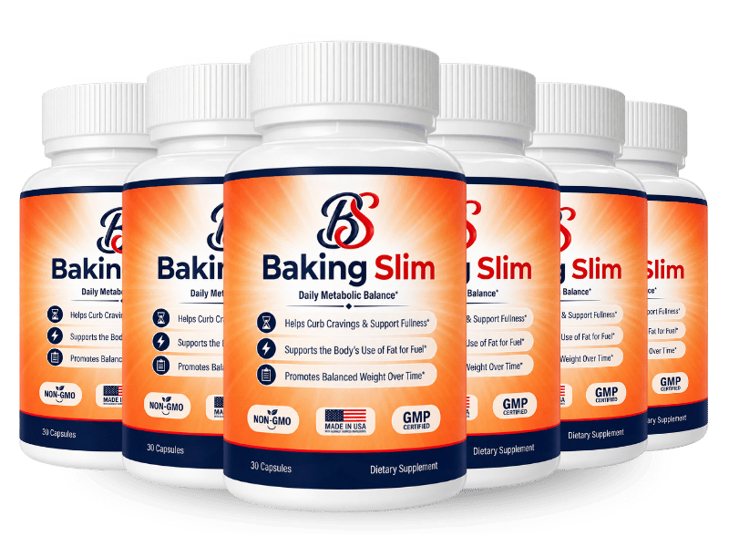

What Is BakingSlim And How Does It Work?
You skipped the bread basket. You measured the olive oil. You walked the dog an extra lap around the block. And this morning the scale showed the same number it showed last Tuesday.
The discipline was never the issue. Inside your body, blood sugar follows a curve every time you eat — it rises, then it should glide back down smoothly while the energy gets used. After 45, that glide turns into a cliff. Sugar spikes fast, crashes hard, and the crash sends an emergency craving signal to your brain before the calories from your last meal have even been absorbed. Your body reads the crash as a famine and locks every available calorie into fat storage. This is the spike-and-crash loop — and no amount of willpower can override a signal that fires at the cellular level.
BakingSlim is a daily capsule formula built around a 510mg proprietary blend of nine botanicals — led by Chromium Picolinate, Berberine HCL, and Cayenne Fruit — each selected for a specific role in steadying that blood sugar curve. The blend works in layers: the first group keeps sugar from spiking too high, the second prevents the crash that follows, and the third shifts the body's fuel preference back toward stored fat instead of the meal you just ate.
One capsule each morning with water. No meal plan, no calorie counting, no stimulant jitters. The formula addresses the spike-and-crash loop at the root instead of masking it — and the women who stay consistent for 90 days or longer are the ones who report the most visible changes.
BakingSlim Ingredients
Nine ingredients. One job each. Together they keep the blood sugar curve steady, quiet the spike-and-crash loop, and shift the body from storing fat to releasing it.
- Chromium Picolinate (100mcg — 286% Daily Value): The anchor mineral that keeps blood sugar within a normal range between meals. At nearly three times the daily value, this dose is calibrated to reduce the sharp drops that trigger mid-afternoon cravings and evening binges.
- Berberine HCL: A potent botanical compound that improves the way cells respond to insulin. When cells listen to insulin properly, glucose enters the cell and gets burned — instead of floating in the bloodstream and eventually converting to belly fat.
- Green Tea Leaf Extract: Delivers concentrated EGCG catechins that activate thermogenesis — the body's internal heat engine that burns calories at rest. The metabolic boost is gentle, sustained, and entirely stimulant-free.
- Apple Cider Vinegar: Slows the rate at which sugar enters the bloodstream after a meal, preventing the sharp spike that starts the loop in the first place. Also promotes a lasting sense of fullness that makes smaller portions feel satisfying instead of punishing.
- Ginger Root: Calms the digestive system and promotes natural warmth in the gut, supporting thermogenic activity while keeping bloating and discomfort out of the picture.
- Cinnamon Bark Extract: Works alongside chromium and berberine to reinforce the blood sugar floor — the point where sugar levels stop falling and cravings stop firing.
- Bitter Orange Fruit Extract: Targets the body's rate of fat utilization, nudging it to pull energy from stored reserves rather than relying exclusively on incoming food.
- Cayenne Fruit: Capsaicin raises core temperature slightly and accelerates calorie expenditure after meals. It also dulls appetite at the neurological level — not by suppressing hunger, but by making the existing meal register as more satisfying.
- Banaba Leaf Extract: Rich in corosolic acid, which helps cells absorb glucose more efficiently — pulling excess sugar out of the blood before it can trigger the crash.
The nine compounds are not random additions. Each one addresses a different segment of the spike-and-crash loop, and removing any one of them weakens the chain. The formula works because the full sequence fires together with each capsule.
BakingSlim Side Effects
The entire formula is made from plant-derived ingredients that the body already encounters in food — cinnamon, ginger, green tea, cayenne, apple cider vinegar — delivered in standardized, concentrated forms. Every batch is manufactured in an FDA-registered, GMP-certified facility in Aurora, Colorado, under strict quality protocols. The formula is non-GMO and free from synthetic stimulants, artificial hormones, and harsh chemical additives.
Because the ingredients support the body's own blood sugar regulation and metabolic signaling rather than forcing a pharmacological override, the formula works with the body instead of against it. There is no caffeine-driven jitter, no appetite suppressant that leaves you dizzy by noon, and no compound that artificially rewires brain chemistry.
Since its release, there have been no widespread reports of adverse reactions among users following the recommended dosage. As with any dietary supplement, anyone with an existing medical condition or currently taking prescription medication should consult a healthcare professional before starting.
BakingSlim Dosage
One capsule. One glass of water. Every morning.
That is the full protocol. No splitting doses across the day, no timing windows around meals, no cycling on and off. Take one BakingSlim capsule first thing in the morning and carry on — the nine ingredients begin their work in sequence while you go about your day.
Each bottle contains a full 30-day supply. The manufacturer recommends a minimum of 90 to 180 days of consistent daily use for optimal results. The first shifts tend to arrive earlier — quieter cravings within the first few weeks, steadier energy through the afternoon, less food noise between meals. But the deeper metabolic change that moves the scale and reshapes how clothes fit builds with months of daily consistency, not days.
Multi-bottle packages are available at a lower per-unit cost for women who plan to stay the course. Do not exceed the recommended dose — the formula is balanced around a specific ratio, and more does not mean faster.
BakingSlim – Refund Policy
Every order of BakingSlim is covered by a 60-day money-back guarantee. Two full months to use the product daily and decide whether the changes are real.
The guarantee exists because the manufacturer trusts what happens once the spike-and-crash loop starts breaking. Sixty days is enough time for most women to feel the first tangible shifts — fewer cravings, less bloating, clothes fitting differently. If none of that materializes, you get your money back.
For complete terms and conditions, visit the official BakingSlim website directly.
BakingSlim Customer Reviews
 Susan Morretti
Phoenix, AZ
Verified Purchase – 6 Bottles
Susan Morretti
Phoenix, AZ
Verified Purchase – 6 Bottles
"I could set a clock by my cravings — 3pm, every single day, standing in the break room staring at the vending machine like it owed me something. I had tried cutting carbs, tried eating more protein at lunch, tried chewing gum. Nothing touched it. Six weeks into BakingSlim and the 3pm trip just stopped. I did not fight it. I did not white-knuckle through it. It just was not there anymore. By week eight I was down two full dress sizes and my husband noticed my face looked different — less puffy, more defined. I have energy to walk after dinner now instead of collapsing on the couch. The loop broke."
 Janet Kowalski
Houston, TX
Verified Purchase – 6 Bottles
Janet Kowalski
Houston, TX
Verified Purchase – 6 Bottles
"My doctor told me my blood sugar was creeping and that I needed to get serious about the weight. I am 61. I have been through every diet since Atkins. I sat on my kitchen counter and cried because I did not know what else to try. My daughter ordered BakingSlim for me and I took it every morning for 90 days without skipping once. I lost 18 pounds. My fasting numbers came down enough that my doctor asked what I changed. The belly fat that sat right above my waistband — the part that made every pair of pants uncomfortable — finally started shrinking. I can buckle my seatbelt without shifting in the seat first."
"I had not worn a swimsuit in four years. My sister invited me to her beach house last summer and I made up an excuse because I could not face being seen next to her — she is naturally slim and I have fought my weight since menopause hit. After two months on BakingSlim, I bought a one-piece and said yes. I am not a size 6. I am not pretending the belly is gone. But the bloating stopped, my arms feel firmer, and for the first time in years I walked onto the sand without pulling a cover-up down to my knees. That was worth everything."
BakingSlim – Where To Buy
BakingSlim is sold exclusively through its official website. It is not available on Amazon, eBay, Walmart, or any third-party marketplace.
The dietary supplement space is saturated with unauthorized sellers listing knockoffs under near-identical labels. With a proprietary blend that depends on nine specific botanicals in controlled ratios — where a weak cinnamon extract or a low-grade berberine renders the entire formula ineffective — purchasing from an unverified source risks more than wasted money. It puts an unknown product into your body every morning.
The 60-day money-back guarantee, direct customer support, and product authenticity verification apply only to orders placed through the official channel. Before completing any purchase, confirm you are on the genuine BakingSlim website.
To ensure you're getting the authentic product, most users choose to visit the official website directly.
Is BakingSlim A Scam?
Nothing about this formula points to a scam.
The product is built on a clear, identifiable mechanism — the spike-and-crash loop — and every ingredient in the 510mg blend has a defined role in either stabilizing blood sugar, reducing cravings, or shifting the body's fuel preference toward stored fat. Production takes place in a GMP-certified facility in Aurora, Colorado. The 60-day guarantee removes the financial risk entirely. And the pattern in user reports — quieter food noise, steadier energy, gradual changes on the scale — lines up with what the formula targets.
That said, BakingSlim is not overnight magic. It does not replace meals, skip workouts for you, or undo thirty years of metabolic history in a week. The women who report the most visible changes are the ones who took one capsule every morning for three months or longer and let the compound effect build.
If this is not for you, that is genuinely fine. Plenty of women manage their weight differently, and there is nothing wrong with that path. But if you have survived every restriction phase, outlasted every fad, white-knuckled through every craving window — and your body still hoards every calorie like a crisis is coming — this is a different approach. Take the sixty days the guarantee covers. If nothing changes, you send it back and you are out nothing but a few mornings.
As with any supplement, consult a healthcare professional if you have questions about your specific situation.

For those who want to verify product details or check current availability, the official BakingSlim website remains the safest and most reliable option.